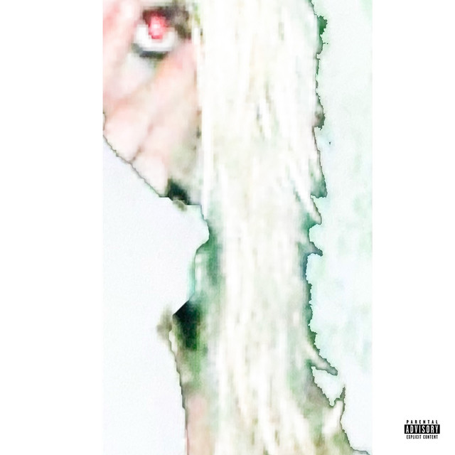

ᴛʀᴀᴜᴍᴀ
"ONCE A YEAR I GO INSANE!"
Trauma was released on July 18th of 2024 it has a runtime of 2 minutes and 11 seconds. Trauma was produced and written by 2hollis himself. 2hollis uses trauma to speak on fame as well as the pressure that comes with fane. For example, he compares himself to a magician trying to escape shackles. Trauma at the time was much different from all the other songs in his discography, it was a turning point in what 2 is capable of.
